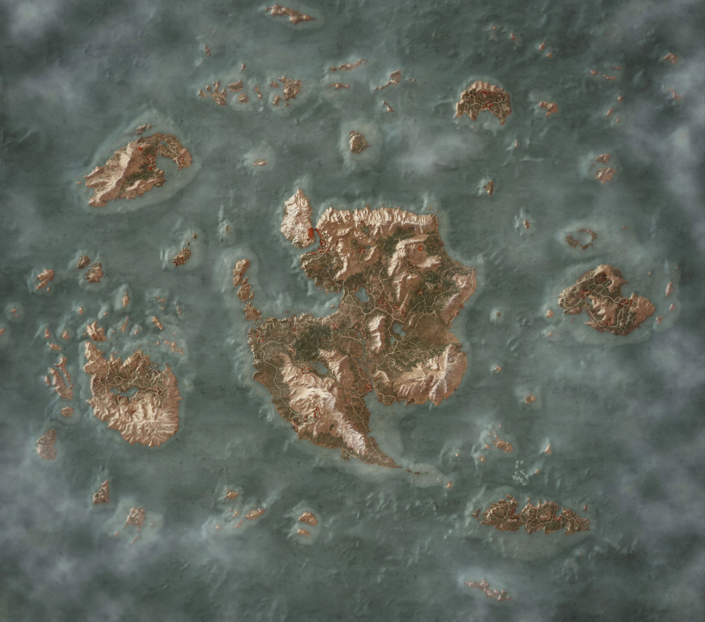

Král je mrtev, ať žije král -Během smutečního karu za krále Brana v pevnosti Kaer Trolde se Geralt a Yennefer tajně vloupou do laboratoře druida Myšlova. Zde úspěšně ukradnou magický artefakt Uroborovu masku, která jim má pomoci odhalit stopu zmizelé Ciri na Skellige.
Ozvěny minulosti -Geralt a Yennefer se vydávají do magicky zničeného lesa na Ard Skellig, kde s pomocí ukradené Uroborovy masky nahlédnou do minulosti. Díky této magické vizi zjistí, že zde Ciri doprovázel tajemný elfský vědma a že oba prchali před útokem Divokého honu.
Pán Undviku -Geralt se vydává na mrazivý a opuštěný ostrov Undvik, aby našel Hjalmara, syna jarla Cracha, který tam odplul se svými muži zabít bájného netvora. Po stopách zkázy a přeživších Geralt nakonec Hjalmara najde a společně porazí Ledového obra, čímž Hjalmar získá obrovskou slávu pro svou kandidaturu na krále Skellige.